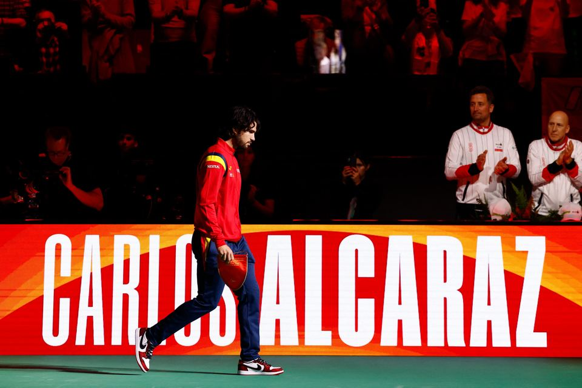

Y ahora sí, es la hora de Alcaraz: “Si él está ‘ready’, nosotros también lo estamos”

Tras cinco días sin competir y haber sido reservado ante Austria, el murciano apunta a jugar la semifinal contra Gran Bretaña, ya sea en individual o dobles
A mediodía, Carlos Alcaraz charla largo y tendido con su entrenador, Samuel López, mientras observa las maniobras conjuntas de Marcel Granollers y Pedro Martínez durante el entrenamiento en la central de Bolonia. El murciano consulta el móvil, gestualiza, intercambia impresiones con Feliciano López, firma un par de bolas a petición de una empleada federativa y, en un momento dado, se incorpora de la banqueta para reproducir y matizar algún aspecto técnico de su nuevo servicio, que incluye un retoque significativo al hacer la palanca: a la hora de iniciarla, eleva el pie izquierdo para acompasar el impulso y perfeccionar la coordinación. Un guiño al pistolero Pete Sampras.
Alcaraz y varios miembros del equipo español se enteraron de la retirada del motociclista Marc Márquez conforme llegaban a la pista de entrenamiento. El joven murciano es un admirador del piloto, que el domingo, con 33 años, disputará su última carrera.
“Los más grandes se van en lo más alto”, decía el tenista. Ferrer, también aficionado a las motos, expresó: “Ha sido sorprendente, la verdad. Le deseamos todo lo mejor, ha sido un orgullo para el deporte español. Lo he seguido mucho y me ha hecho disfrutar”.